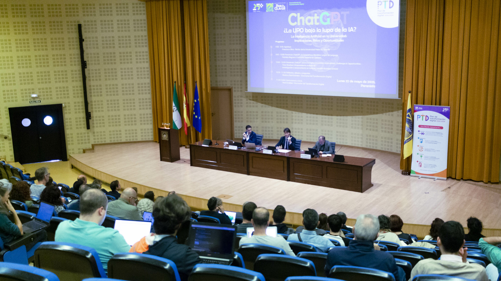

Jornadas de Innovación Tecnológica
Descubre las últimas tendencias en desarrollo de software, inteligencia artificial y metodologías ágiles de la mano de expertos del sector.
encuentra aqui informacion .....
Conectamos a los estudiantes universitarios con el mundo profesional a través de conferencias, talleres prácticos y eventos con empresas colaboradoras.
Utiliza el menú superior para navegar por las diferentes secciones del evento, consultar los horarios, conocer a los ponentes invitados o inscribirte en las actividades disponibles.
Descubre las últimas tendencias en desarrollo de software, inteligencia artificial y metodologías ágiles de la mano de expertos del sector.
Un espacio habilitado para que los estudiantes de último curso puedan entablar contacto directo con los departamentos de selección de grandes empresas tecnológicas.
